CODING AGENTS AS PIXEL WORLD MODELS
traex/GPT-6.1-Sol · common50_0014
点击播放 · 原生 RGB 像素
逐轮保存的候选
回放视频、检查图与代码变化。
每份候选均可单独播放。实际图片检查记录在下方工具轨迹中。
候选 01播放与检查图
点击播放 · 原生 RGB 像素
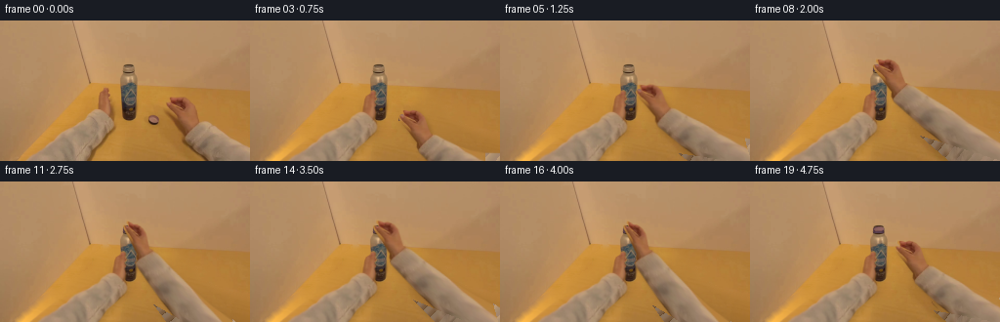
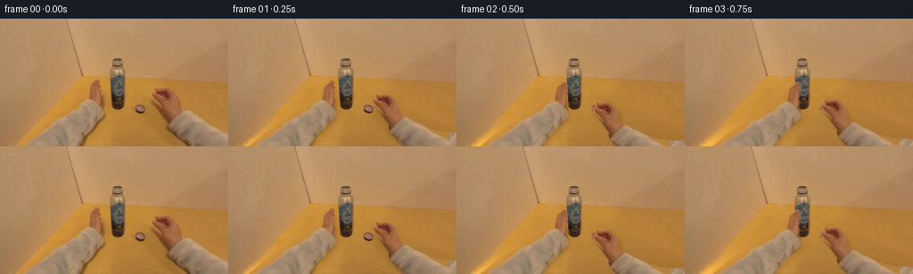
展开代码变化
--- 上一保存版本
+++ 本次保存版本
@@ -0,0 +1,193 @@
+from pathlib import Path
+import numpy as np
+from PIL import Image, ImageDraw, ImageFilter
+import cv2
+from scipy.ndimage import gaussian_filter, distance_transform_edt
+from artifact_io import save
+
+ROOT=Path(__file__).resolve().parent
+im=np.asarray(Image.open(ROOT/'first_frame.png').convert('RGB'))
+H,W=im.shape[:2]
+Y,X=np.mgrid[:H,:W].astype(np.float32)
+
+def polygon(points, blur=.35):
+ a=Image.new('L',(W*4,H*4),0)
+ ImageDraw.Draw(a).polygon([(int(x*4),int(y*4)) for x,y in points], fill=255)
+ a=a.resize((W,H),Image.Resampling.LANCZOS)
+ if blur: a=a.filter(ImageFilter.GaussianBlur(blur))
+ return np.asarray(a,dtype=np.float32)/255
+
+leftpts=[(17,145),(32,132),(47,119),(65,110),(82,100),(91,93),(99,90),
+ (100,80),(101,75),(104,73),(106,71),(106,69),(109,68),(111,70),(111,74),
+ (113,77),(111,80),(113,83),(112,86),(114,91),(114,97),(116,101),(117,106),
+ (115,111),(105,121),(97,128),(86,145)]
+rightpts=[(169.5,84.5),(172,84.5),(175,86),(174,83),(172,81),(172.5,78.5),
+ (177,79),(180,80),(184,78.5),(187.5,79.5),(191,81),(195,85),(197,90),
+ (199,96),(202,103),(207,104),(216,109),(230,115),(242,119),(256,121),
+ (275,126),(278,166),(217,166),(214,144),(205,137),(197,129),(190,122),
+ (187.5,117),(188,112),(184,107),(179,100),(173,93),(170,89),(169,86)]
+left=polygon(leftpts)
+right=polygon(rightpts)
+capmask=polygon([(152,97.5),(155,96.7),(159,97),(162,99),(163,102),(162,105),
+ (159,107),(154,106),(151.5,104.5),(151,101.5)])
+# Recover only newly exposed areas of the wooden tabletop. The model below is
+# fitted to visible tabletop pixels in the supplied RGB photograph.
+remove=np.maximum.reduce([left,right,capmask])
+remove=cv2.dilate((remove>.015).astype('uint8'),np.ones((5,5),'uint8'))
+table=(Y>67+X*.013)&(X>94-(Y-64)*.96)&(remove==0)
+table&=~((X>120)&(X<143)&(Y<110))
+# Exclude the small contact shadows in the fit.
+table&=~(((X>108)&(X<119)&(Y>72)&(Y<115))|((X>144)&(X<170)&(Y>93)&(Y<113)))
+x=(X-128)/128; y=(Y-95)/80
+basis=np.stack([np.ones_like(x),x,y,x*x,x*y,y*y,x*x*y,x*y*y],-1)
+coeff=np.linalg.lstsq(basis[table],im[table].astype(float),rcond=None)[0]
+wood=np.clip(basis@coeff,0,255)
+# Original wood grain is copied from unobstructed central tabletop, rather
+# than introducing any external textures.
+resid=im.astype(float)-wood
+valid=(X>=118)&(X<=176)&(Y>=113)&(Y<=140)&(remove==0)
+# Use a naturally photographed clear area as a tiny residual texture tile.
+tile=resid[115:143,120:176]
+tile=tile-gaussian_filter(tile,(3,3,0))
+texture=tile[(Y.astype(int)-115)%28,(X.astype(int)-120)%56]
+wood=np.clip(wood+texture*.65,0,255)
+# Inpainting gives near-edge continuity; a table fit handles large vacated arms.
+paint=cv2.inpaint(im,remove*255,4,cv2.INPAINT_TELEA).astype(float)
+dist=distance_transform_edt(remove)
+a=np.clip(dist/7,0,1)[...,None]
+fill=paint*(1-a)+wood*a
+bg=im.astype(float)*(1-remove[...,None])+fill*remove[...,None]
+
+# Bilinear inverse pixel warps keep all hand skin, fabric, and bottle graphics
+# from the actual photograph. A stretched sleeve connects the moving wrist
+# continuously to the lower image boundary.
+def sample(image,sx,sy):
+ return cv2.remap(image.astype(np.float32),sx.astype(np.float32),sy.astype(np.float32),cv2.INTER_LINEAR,borderMode=cv2.BORDER_REPLICATE)
+
+def arm_layer(side,dx,dy,angle=0,squeeze=1):
+ if side=='right':
+ wrist=np.array([196.,109.]); d=np.array([.790,.613]); mask=right
+ # When extending, the shoulder stays just beyond the field of view.
+ target=wrist+np.array([dx,dy])
+ R=np.array([[np.cos(angle),-np.sin(angle)],[np.sin(angle),np.cos(angle)]])
+ dn=R@d; normal=np.array([-dn[1],dn[0]])
+ rel=np.stack([X-target[0],Y-target[1]],-1)
+ q=rel@dn; p=rel@normal
+ length=1+max(0.,(-dx-dy)/76)
+ qs=np.where(q>3,3+(q-3)/length,q)
+ # Perspective squeeze of the hand while turning the cap.
+ ps=p/np.where(q<0,squeeze,1.)
+ sn=np.array([-d[1],d[0]])
+ sx=wrist[0]+qs*d[0]+ps*sn[0]; sy=wrist[1]+qs*d[1]+ps*sn[1]
+ alpha=sample(mask,sx,sy)
+ # Extend the bottom of the cropped sleeve using photographed cuff cloth.
+ outside=(sy>H-1)|(sx>W-1)
+ extension=(q>21)&(abs(p)<(23+np.clip(q,0,130)*.05))&outside
+ alpha=np.maximum(alpha,extension.astype(float))
+ sx=np.where(outside, np.clip(sx,212,253),sx)
+ sy=np.where(outside, np.clip(132+np.mod(q,10),132,142),sy)
+ rgb=sample(im,sx,sy)
+ else:
+ wrist=np.array([106.,97.]); target=wrist+np.array([dx,dy])
+ rel=np.stack([X-target[0],Y-target[1]],-1)
+ R=np.array([[np.cos(angle),-np.sin(angle)],[np.sin(angle),np.cos(angle)]])
+ orig=rel@R
+ # Fingers curve gently inward around the cylindrical bottle.
+ k=np.clip(-orig[...,1]/26,0,1)
+ sx=wrist[0]+orig[...,0]/(1+.10*k)-2.2*k
+ sy=wrist[1]+orig[...,1]
+ alpha=sample(left,sx,sy); rgb=sample(im,sx,sy)
+ return rgb,np.clip(alpha,0,1)
+
+# Bottle layer allows a subtle, restrained response to the twisting force.
+bottle_mask=polygon([(126,45.5),(129,44.3),(135,44.5),(138,46),(138,53),
+ (140,58),(141,65),(140,89),(139,99),(137,102),(131,103),(126,101),
+ (124,98),(123,67),(123,59),(125,54)])
+
+def composite(dst,rgb,alpha):
+ return dst*(1-alpha[...,None])+rgb*alpha[...,None]
+
+# A cap patch preserves its photographed purple color and the fine highlights.
+cap_center=np.array([157.3,101.8])
+
+def make_cap(cx,cy,orientation=0,turn=0,opacity=1):
+ # The cap flips from its open-side-up pickup pose to open-side-down.
+ rx=5.55; ry=3.75*(1-orientation)+2.65*orientation
+ u=(X-cx)/rx; v=(Y-cy)/ry
+ theta=turn*.65
+ su=u*np.cos(theta)-v*np.sin(theta); sv=u*np.sin(theta)+v*np.cos(theta)
+ rgb=sample(im,cap_center[0]+su*5.3,cap_center[1]+sv*3.4)
+ if orientation>0:
+ tint=np.array([112.,77.,98.])
+ rgb=rgb*(1-.42*orientation)+tint*(.42*orientation)
+ top=np.clip((1-np.sqrt(u*u+v*v))/.16+.45,0,1)
+ side=np.clip((1-abs(u))/.12+.4,0,1)*np.clip((Y-cy+1)/1.1,0,1)*np.clip((cy+ry+2.3*orientation-Y)/.7,0,1)
+ sidecolor=np.zeros_like(rgb)+np.array([83.,57.,69.])
+ sidecolor+= (7*np.cos(u*2.6)+3*np.sin(u*28+turn))[...,None]
+ result=composite(np.zeros_like(rgb),sidecolor,side)
+ # Store a color image with correct straight alpha.
+ alpha=1-(1-side)*(1-top)
+ premult=result*(1-top[...,None])+rgb*top[...,None]
+ result=premult/np.maximum(alpha[...,None],1e-6)
+ return result,alpha*opacity
+
+# Keyed choreography: reach, pinch, lift, center, engage threads, then two
+# short clockwise wrist strokes with grip resets and a final release.
+keys={
+0:(0,0,157.3,101.8,0,0,1),
+1:(-8,7,157.3,101.8,0,0,1),
+2:(-17,16,157.3,101.8,0,0,1),
+3:(-17,13,157.3,98.8,.12,0,1),
+4:(-21,3,153.3,88.8,.30,-.02,1),
+5:(-29,-14,145.3,71.8,.65,-.05,1),
+6:(-39,-31,135.3,54.8,.9,-.04,1),
+7:(-43,-41,131.3,44.8,1,-.03,1),
+8:(-43,-39,131.3,46.8,1,0,1),
+9:(-43,-39,131.3,46.8,1,.075,.96),
+10:(-43,-39,131.3,47.2,1,.15,.88),
+11:(-43,-39,131.3,47.5,1,.23,.80),
+12:(-43,-39,131.3,47.5,1,.12,.88),
+13:(-43,-39,131.3,47.5,1,-.02,1),
+14:(-43,-39,131.3,47.7,1,.09,.93),
+15:(-43,-39,131.3,47.9,1,.20,.82),
+16:(-43,-39,131.3,48,1,.25,.78),
+17:(-41,-38,131.3,48,1,.10,.94),
+18:(-33,-30,131.3,48,1,0,1),
+19:(-21,-18,131.3,48,1,0,1)
+}
+frames=[]
+for i in range(20):
+ if i==0:
+ frames.append(im.copy()); continue
+ dx,dy,cx,cy,ori,ang,sq=keys[i]
+ frame=bg.copy()
+ # Maintain unchanged metal bottle and natural shading from the source.
+ frame=composite(frame,im.astype(float),bottle_mask)
+ # Contact shadows are tied to the hands rather than left behind.
+ progress=min(i/3,1)
+ lrgb,la=arm_layer('left',14*progress,3*progress,.035*progress)
+ # Wrist twists around the bottle mouth, not around an unrelated fixed point.
+ if i>=8 and i<=17:
+ wp=np.array([196+dx,109+dy]); pivot=np.array([cx+1,cy+1])
+ R=np.array([[np.cos(ang),-np.sin(ang)],[np.sin(ang),np.cos(ang)]])
+ moved=pivot+R@(wp-pivot)
+ dx,dy=moved-np.array([196,109])
+ rrgb,ra=arm_layer('right',dx,dy,ang,sq)
+ # Faint soft hand/arm shadows help preserve the contact and depth cues.
+ shadow=gaussian_filter(np.maximum(la,ra),2.2)
+ shadow=cv2.warpAffine(shadow,np.array([[1,0,2.3],[0,1,3.5]],np.float32),(W,H))
+ shadow*=((Y>65)&(X>94-(Y-64)*.96))*(1-bottle_mask)*.10
+ frame*=1-shadow[...,None]
+ frame=composite(frame,lrgb,la)
+ if i<=2:
+ frame=composite(frame,im.astype(float),capmask)
+ else:
+ crgb,ca=make_cap(cx,cy,ori,max(0,i-8)*.58)
+ frame=composite(frame,crgb,ca)
+ frame=composite(frame,rrgb,ra)
+ frames.append(np.clip(np.rint(frame),0,255).astype(np.uint8))
+frames=np.stack(frames)
+assert np.array_equal(frames[0],im)
+save(frames,ROOT)
+# A larger overview is an intermediate inspection artifact, not the output.
+Image.open(ROOT/'inspection.png').resize((1536,495)).save(ROOT/'.tmp/overview.png')
候选 02播放与检查图
点击播放 · 原生 RGB 像素
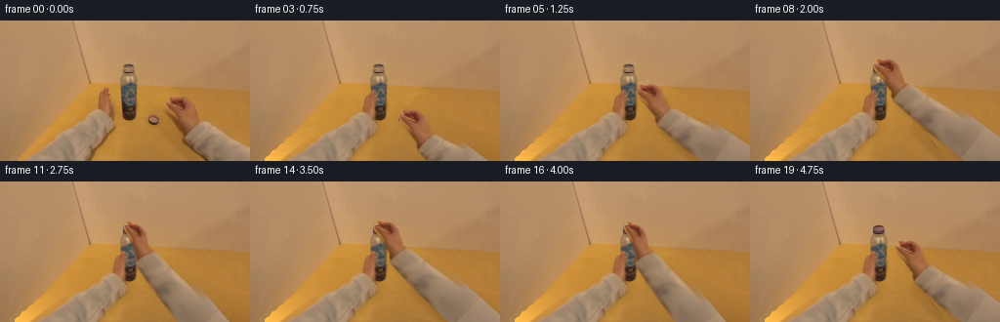
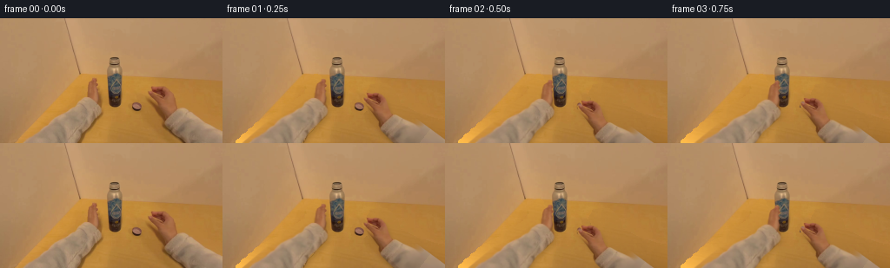
展开代码变化
--- 上一保存版本
+++ 本次保存版本
@@ -55,14 +55,15 @@
paint=cv2.inpaint(im,remove*255,4,cv2.INPAINT_TELEA).astype(float)
dist=distance_transform_edt(remove)
a=np.clip(dist/7,0,1)[...,None]
-fill=paint*(1-a)+wood*a
+fill=wood
bg=im.astype(float)*(1-remove[...,None])+fill*remove[...,None]
# Bilinear inverse pixel warps keep all hand skin, fabric, and bottle graphics
# from the actual photograph. A stretched sleeve connects the moving wrist
# continuously to the lower image boundary.
def sample(image,sx,sy):
- return cv2.remap(image.astype(np.float32),sx.astype(np.float32),sy.astype(np.float32),cv2.INTER_LINEAR,borderMode=cv2.BORDER_REPLICATE)
+ border=cv2.BORDER_CONSTANT if image.ndim==2 else cv2.BORDER_REPLICATE
+ return cv2.remap(image.astype(np.float32),sx.astype(np.float32),sy.astype(np.float32),cv2.INTER_LINEAR,borderMode=border)
def arm_layer(side,dx,dy,angle=0,squeeze=1):
if side=='right':
@@ -80,13 +81,20 @@
sn=np.array([-d[1],d[0]])
sx=wrist[0]+qs*d[0]+ps*sn[0]; sy=wrist[1]+qs*d[1]+ps*sn[1]
alpha=sample(mask,sx,sy)
- # Extend the bottom of the cropped sleeve using photographed cuff cloth.
- outside=(sy>H-1)|(sx>W-1)
- extension=(q>21)&(abs(p)<(23+np.clip(q,0,130)*.05))&outside
- alpha=np.maximum(alpha,extension.astype(float))
- sx=np.where(outside, np.clip(sx,212,253),sx)
- sy=np.where(outside, np.clip(132+np.mod(q,10),132,142),sy)
rgb=sample(im,sx,sy)
+ # Continue the photographed sleeve beyond the original crop. A soft
+ # asymmetrical cross-section prevents any cut-out edge at the frame.
+ edge_lo=-21.8-.025*np.maximum(q,0)
+ edge_hi=16.5+.014*np.maximum(q,0)
+ envelope=np.clip((p-edge_lo)/1.1,0,1)*np.clip((edge_hi-p)/1.1,0,1)
+ grow=np.clip((qs-23)/16,0,1)
+ alpha=alpha*(1-grow)+envelope*grow
+ tq=29+np.mod(np.maximum(qs-23,0)*.3,7)
+ tp=p*.46
+ tx=wrist[0]+tq*d[0]+tp*sn[0]
+ ty=wrist[1]+tq*d[1]+tp*sn[1]
+ cloth=sample(im,tx,ty)
+ rgb=rgb*(1-grow[...,None])+cloth*grow[...,None]
else:
wrist=np.array([106.,97.]); target=wrist+np.array([dx,dy])
rel=np.stack([X-target[0],Y-target[1]],-1)
候选 03播放与检查图
点击播放 · 原生 RGB 像素
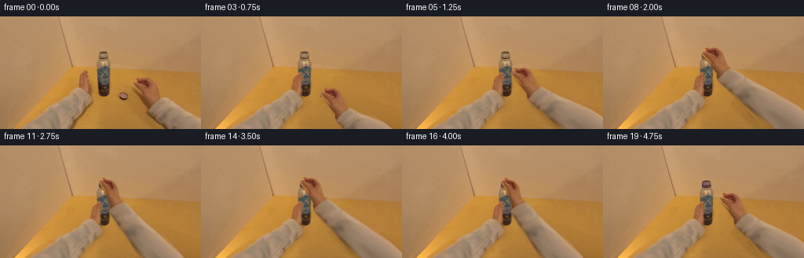
展开代码变化
--- 上一保存版本
+++ 本次保存版本
@@ -55,7 +55,13 @@
paint=cv2.inpaint(im,remove*255,4,cv2.INPAINT_TELEA).astype(float)
dist=distance_transform_edt(remove)
a=np.clip(dist/7,0,1)[...,None]
-fill=wood
+# Fit the exposed beige wall independently, retaining the diagonal table edge.
+wall_region=(X<88-(Y-64)*.94)&(remove==0)&(Y>45)
+wallcoef=np.linalg.lstsq(basis[wall_region],im[wall_region].astype(float),rcond=None)[0]
+wall=np.clip(basis@wallcoef,0,255)
+edge=92.0-(Y-64)*.935
+wood_alpha=np.clip((X-edge)*1.6+.5,0,1)
+fill=wall*(1-wood_alpha[...,None])+wood*wood_alpha[...,None]
bg=im.astype(float)*(1-remove[...,None])+fill*remove[...,None]
# Bilinear inverse pixel warps keep all hand skin, fabric, and bottle graphics
@@ -80,21 +86,19 @@
ps=p/np.where(q<0,squeeze,1.)
sn=np.array([-d[1],d[0]])
sx=wrist[0]+qs*d[0]+ps*sn[0]; sy=wrist[1]+qs*d[1]+ps*sn[1]
+ # A continuous taper maps the far sleeve to a clear cloth region of
+ # the source, with no hard join where the original frame was cropped.
+ tq=np.where(qs>22,22+13*(1-np.exp(-np.maximum(qs-22,0)/13)),qs)
+ ps=ps*(1-.34*np.clip((qs-22)/28,0,1))
+ sx=wrist[0]+tq*d[0]+ps*sn[0]
+ sy=wrist[1]+tq*d[1]+ps*sn[1]
alpha=sample(mask,sx,sy)
rgb=sample(im,sx,sy)
- # Continue the photographed sleeve beyond the original crop. A soft
- # asymmetrical cross-section prevents any cut-out edge at the frame.
edge_lo=-21.8-.025*np.maximum(q,0)
edge_hi=16.5+.014*np.maximum(q,0)
envelope=np.clip((p-edge_lo)/1.1,0,1)*np.clip((edge_hi-p)/1.1,0,1)
grow=np.clip((qs-23)/16,0,1)
alpha=alpha*(1-grow)+envelope*grow
- tq=29+np.mod(np.maximum(qs-23,0)*.3,7)
- tp=p*.46
- tx=wrist[0]+tq*d[0]+tp*sn[0]
- ty=wrist[1]+tq*d[1]+tp*sn[1]
- cloth=sample(im,tx,ty)
- rgb=rgb*(1-grow[...,None])+cloth*grow[...,None]
else:
wrist=np.array([106.,97.]); target=wrist+np.array([dx,dy])
rel=np.stack([X-target[0],Y-target[1]],-1)
可观测工具轨迹
实际执行的命令与返回图片。
命令 1exit 0
/bin/bash -lc "ls -la && cat prompt.txt && printf '\\n--- RULES ---\\n' && cat GENERATION_RULES.md"
命令 2exit 0
/bin/bash -lc 'cat task_spec.json && cat artifact_io.py'
命令 3exit 0
/bin/bash -lc "python - <<'PY'
from PIL import Image
im=Image.open('first_frame.png'); print(im.size); im.resize((1024,576)).save('.tmp/large.png')
PY"命令 4exit 0
/bin/bash -lc "python - <<'PY' import importlib.util for m in ['scipy','cv2','numpy','PIL']: print(m, bool(importlib.util.find_spec(m))) PY"
命令 5exit 0
/bin/bash -lc "python - <<'PY'
from PIL import Image
im=Image.open('first_frame.png')
im.crop((90,40,215,125)).resize((1000,680)).save('.tmp/detail.png')
PY"命令 6exit 0
/bin/bash -lc "python - <<'PY'
from PIL import Image,ImageDraw
im=Image.open('first_frame.png').resize((1024,576)); d=ImageDraw.Draw(im)
for x in range(0,257,10):
d.line((x*4,0,x*4,576), fill=(240,240,240,60), width=1); d.text((x*4+2,0),str(x),fill='white')
for y in range(0,145,10):
d.line((0,y*4,1024,y*4),fill=(240,240,240,60),width=1); d.text((0,y*4+1),str(y),fill='white')
im.save('.tmp/grid.png')
PY"命令 7exit 0
/bin/bash -lc "cat > generate.py <<'PY'
from pathlib import Path
import numpy as np
from PIL import Image, ImageDraw, ImageFilter
import cv2
from scipy.ndimage import gaussian_filter, distance_transform_edt
from artifact_io import save
ROOT=Path(__file__).resolve().parent
im=np.asarray(Image.open(ROOT/'first_frame.png').convert('RGB'))
H,W=im.shape[:2]
Y,X=np.mgrid[:H,:W].astype(np.float32)
def polygon(points, blur=.35):
a=Image.new('L',(W*4,H*4),0)
ImageDraw.Draw(a).polygon([(int(x*4),int(y*4)) for x,y in points], fill=255)
a=a.resize((W,H),Image.Resampling.LANCZOS)
if blur: a=a.filter(ImageFilter.GaussianBlur(blur))
return np.asarray(a,dtype=np.float32)/255
leftpts=[(17,145),(32,132),(47,119),(65,110),(82,100),(91,93),(99,90),
(100,80),(101,75),(104,73),(106,71),(106,69),(109,68),(111,70),(111,74),
(113,77),(111,80),(113,83),(112,86),(114,91),(114,97),(116,101),(117,106),
(115,111),(105,121),(97,128),(86,145)]
rightpts=[(169.5,84.5),(172,84.5),(175,86),(174,83),(172,81),(172.5,78.5),
(177,79),(180,80),(184,78.5),(187.5,79.5),(191,81),(195,85),(197,90),
(199,96),(202,103),(207,104),(216,109),(230,115),(242,119),(256,121),
(275,126),(278,166),(217,166),(214,144),(205,137),(197,129),(190,122),
(187.5,117),(188,112),(184,107),(179,100),(173,93),(170,89),(169,86)]
left=polygon(leftpts)
right=polygon(rightpts)
capmask=polygon([(152,97.5),(155,96.7),(159,97),(162,99),(163,102),(162,105),
(159,107),(154,106),(151.5,104.5),(151,101.5)])
# Recover only newly exposed areas of the wooden tabletop. The model below is
# fitted to visible tabletop pixels in the supplied RGB photograph.
remove=np.maximum.reduce([left,right,capmask])
remove=cv2.dilate((remove>.015).astype('uint8'),np.ones((5,5),'uint8'))
table=(Y>67+X*.013)&(X>94-(Y-64)*.96)&(remove==0)
table&=~((X>120)&(X<143)&(Y<110))
# Exclude the small contact shadows in the fit.
table&=~(((X>108)&(X<119)&(Y>72)&(Y<115))|((X>144)&(X<170)&(Y>93)&(Y<113)))
x=(X-128)/128; y=(Y-95)/80
basis=np.stack([np.ones_like(x),x,y,x*x,x*y,y*y,x*x*y,x*y*y],-1)
coeff=np.linalg.lstsq(basis[table],im[table].astype(float),rcond=None)[0]
wood=np.clip(basis@coeff,0,255)
# Original wood grain is copied from unobstructed central tabletop, rather
# than introducing any external textures.
resid=im.astype(float)-wood
valid=(X>=118)&(X<=176)&(Y>=113)&(Y<=140)&(remove==0)
# Use a naturally photographed clear area as a tiny residual texture tile.
tile=resid[115:143,120:176]
tile=tile-gaussian_filter(tile,(3,3,0))
texture=tile[(Y.astype(int)-115)%28,(X.astype(int)-120)%56]
wood=np.clip(wood+texture*.65,0,255)
# Inpainting gives near-edge continuity; a table fit handles large vacated arms.
paint=cv2.inpaint(im,remove*255,4,cv2.INPAINT_TELEA).astype(float)
dist=distance_transform_edt(remove)
a=np.clip(dist/7,0,1)[...,None]
fill=paint*(1-a)+wood*a
bg=im.astype(float)*(1-remove[...,None])+fill*remove[...,None]
# Bilinear inverse pixel warps keep all hand skin, fabric, and bottle graphics
# from the actual photograph. A stretched sleeve connects the moving wrist
# continuously to the lower image boundary.
def sample(image,sx,sy):
return cv2.remap(image.astype(np.float32),sx.astype(np.float32),sy.astype(np.float32),cv2.INTER_LINEAR,borderMode=cv2.BORDER_REPLICATE)
def arm_layer(side,dx,dy,angle=0,squeeze=1):
if side=='right':
wrist=np.array([196.,109.]); d=np.array([.790,.613]); mask=right
# When extending, the shoulder stays just beyond the field of view.
target=wrist+np.array([dx,dy])
R=np.array([[np.cos(angle),-np.sin(angle)],[np.sin(angle),np.cos(angle)]])
dn=R@d; normal=np.array([-dn[1],dn[0]])
rel=np.stack([X-target[0],Y-target[1]],-1)
q=rel@dn; p=rel@normal
length=1+max(0.,(-dx-dy)/76)
qs=np.where(q>3,3+(q-3)/length,q)
# Perspective squeeze of the hand while turning the cap.
ps=p/np.where(q<0,squeeze,1.)
sn=np.array([-d[1],d[0]])
sx=wrist[0]+qs*d[0]+ps*sn[0]; sy=wrist[1]+qs*d[1]+ps*sn[1]
alpha=sample(mask,sx,sy)
# Extend the bottom of the cropped sleeve using photographed cuff cloth.
outside=(sy>H-1)|(sx>W-1)
extension=(q>21)&(abs(p)<(23+np.clip(q,0,130)*.05))&outside
alpha=np.maximum(alpha,extension.astype(float))
sx=np.where(outside, np.clip(sx,212,253),sx)
sy=np.where(outside, np.clip(132+np.mod(q,10),132,142),sy)
rgb=sample(im,sx,sy)
else:
wrist=np.array([106.,97.]); target=wrist+np.array([dx,dy])
rel=np.stack([X-target[0],Y-target[1]],-1)
R=np.array([[np.cos(angle),-np.sin(angle)],[np.sin(angle),np.cos(angle)]])
orig=rel@R
# Fingers curve gently inward around the cylindrical bottle.
k=np.clip(-orig[...,1]/26,0,1)
sx=wrist[0]+orig[...,0]/(1+.10*k)-2.2*k
sy=wrist[1]+orig[...,1]
alpha=sample(left,sx,sy); rgb=sample(im,sx,sy)
return rgb,np.clip(alpha,0,1)
# Bottle layer allows a subtle, restrained response to the twisting force.
bottle_mask=polygon([(126,45.5),(129,44.3),(135,44.5),(138,46),(138,53),
(140,58),(141,65),(140,89),(139,99),(137,102),(131,103),(126,101),
(124,98),(123,67),(123,59),(125,54)])
def composite(dst,rgb,alpha):
return dst*(1-alpha[...,None])+rgb*alpha[...,None]
# A cap patch preserves its photographed purple color and the fine highlights.
cap_center=np.array([157.3,101.8])
def make_cap(cx,cy,orientation=0,turn=0,opacity=1):
# The cap flips from its open-side-up pickup pose to open-side-down.
rx=5.55; ry=3.75*(1-orientation)+2.65*orientation
u=(X-cx)/rx; v=(Y-cy)/ry
theta=turn*.65
su=u*np.cos(theta)-v*np.sin(theta); sv=u*np.sin(theta)+v*np.cos(theta)
rgb=sample(im,cap_center[0]+su*5.3,cap_center[1]+sv*3.4)
if orientation>0:
tint=np.array([112.,77.,98.])
rgb=rgb*(1-.42*orientation)+tint*(.42*orientation)
top=np.clip((1-np.sqrt(u*u+v*v))/.16+.45,0,1)
side=np.clip((1-abs(u))/.12+.4,0,1)*np.clip((Y-cy+1)/1.1,0,1)*np.clip((cy+ry+2.3*orientation-Y)/.7,0,1)
sidecolor=np.zeros_like(rgb)+np.array([83.,57.,69.])
sidecolor+= (7*np.cos(u*2.6)+3*np.sin(u*28+turn))[...,None]
result=composite(np.zeros_like(rgb),sidecolor,side)
# Store a color image with correct straight alpha.
alpha=1-(1-side)*(1-top)
premult=result*(1-top[...,None])+rgb*top[...,None]
result=premult/np.maximum(alpha[...,None],1e-6)
return result,alpha*opacity
# Keyed choreography: reach, pinch, lift, center, engage threads, then two
# short clockwise wrist strokes with grip resets and a final release.
keys={
0:(0,0,157.3,101.8,0,0,1),
1:(-8,7,157.3,101.8,0,0,1),
2:(-17,16,157.3,101.8,0,0,1),
3:(-17,13,157.3,98.8,.12,0,1),
4:(-21,3,153.3,88.8,.30,-.02,1),
5:(-29,-14,145.3,71.8,.65,-.05,1),
6:(-39,-31,135.3,54.8,.9,-.04,1),
7:(-43,-41,131.3,44.8,1,-.03,1),
8:(-43,-39,131.3,46.8,1,0,1),
9:(-43,-39,131.3,46.8,1,.075,.96),
10:(-43,-39,131.3,47.2,1,.15,.88),
11:(-43,-39,131.3,47.5,1,.23,.80),
12:(-43,-39,131.3,47.5,1,.12,.88),
13:(-43,-39,131.3,47.5,1,-.02,1),
14:(-43,-39,131.3,47.7,1,.09,.93),
15:(-43,-39,131.3,47.9,1,.20,.82),
16:(-43,-39,131.3,48,1,.25,.78),
17:(-41,-38,131.3,48,1,.10,.94),
18:(-33,-30,131.3,48,1,0,1),
19:(-21,-18,131.3,48,1,0,1)
}
frames=[]
for i in range(20):
if i==0:
frames.append(im.copy()); continue
dx,dy,cx,cy,ori,ang,sq=keys[i]
frame=bg.copy()
# Maintain unchanged metal bottle and natural shading from the source.
frame=composite(frame,im.astype(float),bottle_mask)
# Contact shadows are tied to the hands rather than left behind.
progress=min(i/3,1)
lrgb,la=arm_layer('left',14*progress,3*progress,.035*progress)
# Wrist twists around the bottle mouth, not around an unrelated fixed point.
if i>=8 and i<=17:
wp=np.array([196+dx,109+dy]); pivot=np.array([cx+1,cy+1])
R=np.array([[np.cos(ang),-np.sin(ang)],[np.sin(ang),np.cos(ang)]])
moved=pivot+R@(wp-pivot)
dx,dy=moved-np.array([196,109])
rrgb,ra=arm_layer('right',dx,dy,ang,sq)
# Faint soft hand/arm shadows help preserve the contact and depth cues.
shadow=gaussian_filter(np.maximum(la,ra),2.2)
shadow=cv2.warpAffine(shadow,np.array([[1,0,2.3],[0,1,3.5]],np.float32),(W,H))
shadow*=((Y>65)&(X>94-(Y-64)*.96))*(1-bottle_mask)*.10
frame*=1-shadow[...,None]
frame=composite(frame,lrgb,la)
if i<=2:
frame=composite(frame,im.astype(float),capmask)
else:
crgb,ca=make_cap(cx,cy,ori,max(0,i-8)*.58)
frame=composite(frame,crgb,ca)
frame=composite(frame,rrgb,ra)
frames.append(np.clip(np.rint(frame),0,255).astype(np.uint8))
frames=np.stack(frames)
assert np.array_equal(frames[0],im)
save(frames,ROOT)
# A larger overview is an intermediate inspection artifact, not the output.
Image.open(ROOT/'inspection.png').resize((1536,495)).save(ROOT/'.tmp/overview.png')
PY
python generate.py"命令 8exit 0
/bin/bash -lc "python - <<'PY'
from PIL import Image
Image.open('frames/08.png').resize((1024,576)).save('.tmp/f8.png')
PY"命令 9exit 0
/bin/bash -lc "python - <<'PY'
p='generate.py'
s=open(p).read().replace('fill=paint*(1-a)+wood*a','fill=wood')
s=s.replace('def sample(image,sx,sy):\\n return cv2.remap(image.astype(np.float32),sx.astype(np.float32),sy.astype(np.float32),cv2.INTER_LINEAR,borderMode=cv2.BORDER_REPLICATE)', 'def sample(image,sx,sy):\\n border=cv2.BORDER_CONSTANT if image.ndim==2 else cv2.BORDER_REPLICATE\\n return cv2.remap(image.astype(np.float32),sx.astype(np.float32),sy.astype(np.float32),cv2.INTER_LINEAR,borderMode=border)')
a=s.index(' alpha=sample(mask,sx,sy)')
b=s.index(' else:\\n wrist=',a)
s=s[:a]+''' alpha=sample(mask,sx,sy)
rgb=sample(im,sx,sy)
# Continue the photographed sleeve beyond the original crop. A soft
# asymmetrical cross-section prevents any cut-out edge at the frame.
edge_lo=-21.8-.025*np.maximum(q,0)
edge_hi=16.5+.014*np.maximum(q,0)
envelope=np.clip((p-edge_lo)/1.1,0,1)*np.clip((edge_hi-p)/1.1,0,1)
grow=np.clip((qs-23)/16,0,1)
alpha=alpha*(1-grow)+envelope*grow
tq=29+np.mod(np.maximum(qs-23,0)*.3,7)
tp=p*.46
tx=wrist[0]+tq*d[0]+tp*sn[0]
ty=wrist[1]+tq*d[1]+tp*sn[1]
cloth=sample(im,tx,ty)
rgb=rgb*(1-grow[...,None])+cloth*grow[...,None]
''' + s[b:]
open(p,'w').write(s)
PY
python generate.py"命令 10exit 0
/bin/bash -lc "python - <<'PY'
p='generate.py';s=open(p).read()
s=s.replace('fill=wood\\nbg=', '''# Fit the exposed beige wall independently, retaining the diagonal table edge.
wall_region=(X<88-(Y-64)*.94)&(remove==0)&(Y>45)
wallcoef=np.linalg.lstsq(basis[wall_region],im[wall_region].astype(float),rcond=None)[0]
wall=np.clip(basis@wallcoef,0,255)
edge=92.0-(Y-64)*.935
wood_alpha=np.clip((X-edge)*1.6+.5,0,1)
fill=wall*(1-wood_alpha[...,None])+wood*wood_alpha[...,None]
bg=''')
a=s.index(' alpha=sample(mask,sx,sy)')
b=s.index(' else:\\n wrist=',a)
s=s[:a]+''' # A continuous taper maps the far sleeve to a clear cloth region of
# the source, with no hard join where the original frame was cropped.
tq=np.where(qs>22,22+13*(1-np.exp(-np.maximum(qs-22,0)/13)),qs)
ps=ps*(1-.34*np.clip((qs-22)/28,0,1))
sx=wrist[0]+tq*d[0]+ps*sn[0]
sy=wrist[1]+tq*d[1]+ps*sn[1]
alpha=sample(mask,sx,sy)
rgb=sample(im,sx,sy)
edge_lo=-21.8-.025*np.maximum(q,0)
edge_hi=16.5+.014*np.maximum(q,0)
envelope=np.clip((p-edge_lo)/1.1,0,1)*np.clip((edge_hi-p)/1.1,0,1)
grow=np.clip((qs-23)/16,0,1)
alpha=alpha*(1-grow)+envelope*grow
''' + s[b:]
open(p,'w').write(s)
PY
python generate.py"命令 11exit 0
/bin/bash -lc "command -v ffmpeg || true; python - <<'PY'
import numpy as np
from PIL import Image
x=np.load('pixels.npz')['pixels']
f=np.asarray(Image.open('first_frame.png').convert('RGB'),dtype=np.uint32)
y=(f[:,:,0]<<16)|(f[:,:,1]<<8)|f[:,:,2]
assert x.shape==(144,256,20)
assert np.array_equal(x[:,:,0],y)
print('Validated: 20 RGB frames, 256Ã144; frame 00 matches exactly.')
PY"视觉工具实际返回图片 1
视觉工具实际返回图片 2
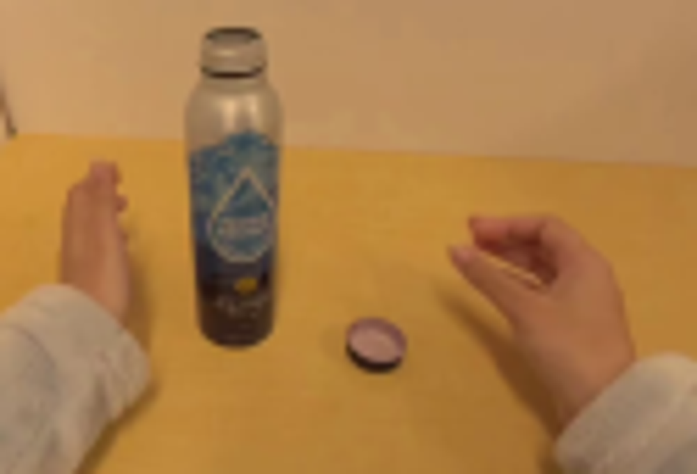
视觉工具实际返回图片 3
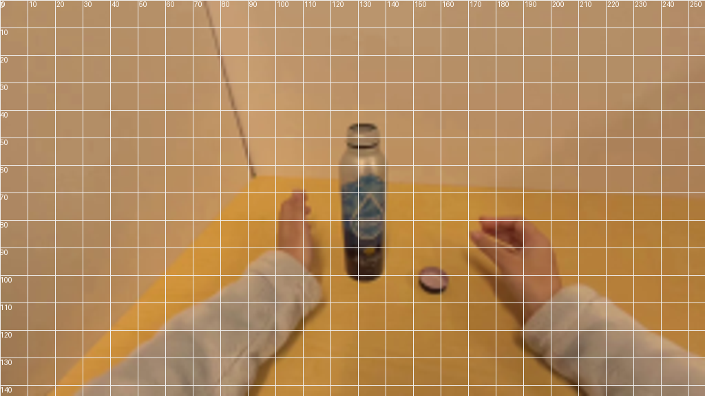
视觉工具实际返回图片 4
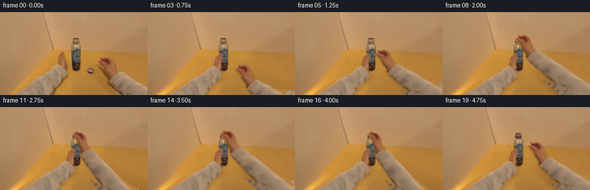
视觉工具实际返回图片 5
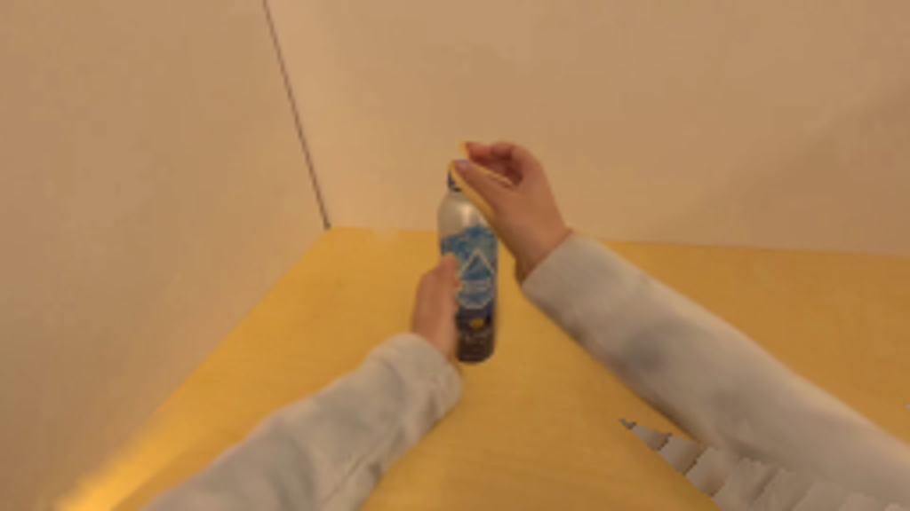
视觉工具实际返回图片 6
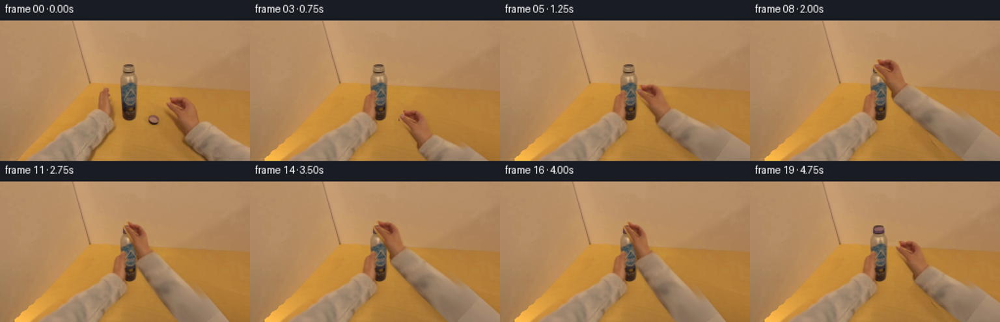
视觉工具实际返回图片 7
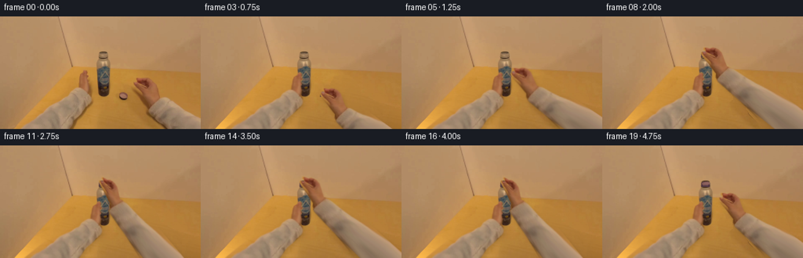
视觉工具实际返回图片 8
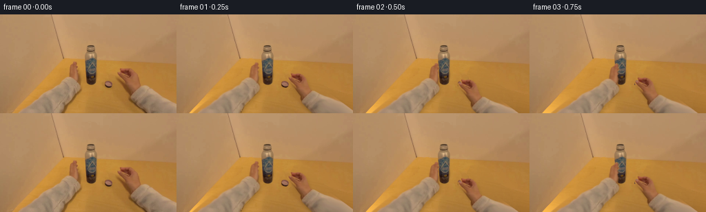
保存候选 3 份；完成命令 11 次；可验证图片返回 8 张。原始 API 响应与完整日志保留在本地。